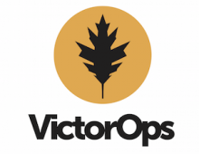
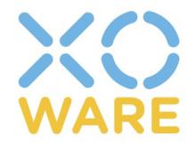

For over 40 years, the USENIX Association has been the leading community for engineers and scientists working on the cutting edge of the computing world. Our conferences are the essential meeting ground for discussion of technical advances in all aspects of computing systems. USENIX events focus on the topics most important to those working in computer security, system administration, file and storage systems, software engineering, and more.
Exhibitors
Exhibit Hall Hours:
Friday Jan 22nd 2pm - 6pm
Saturday Jan 23rd 10am - 6pm
Sunday Jan 24th 10am - 2pm
Silver Sponsor
VAddy is a cloud-based web application security testing service for DevOps teams. Developers do not need any security expertise to test their own applications for vulnerabilities through VAddy’s uncomplicated interface. Furthermore, developers can run an unlimited number of security tests for a fixed monthly price.
VAddy can easily integrate with Continuous Integration (CI) tools such as Jenkins, CircleCI, and Travis CI. If you already use CI tools, you can automatically run security tests alongside your existing test suites.
The Ventura County Amateur Radio Society (VCARS, http://vcars.org) is a small group of radio amateurs that get together regularly to share designs, ideas, and experiences in radio communication. In addition to supporting local community events, the members are involved in disaster preparedness and emergency communications; and practice on-the-air methods through contesting and their annual "N6R" Field Day event, hosted at the Ronald Reagan Presidential Library (Simi Valley, CA).

VictorOps is the real-time incident management platform focusing on incident lifecycle management and collaboration for IT and DevOps teams. The solution combines the power of people and data to solve IT problems in real-time. The VictorOps platform seamlessly orchestrates team situational awareness, incident creation, escalation, notification, and remediation with team members regardless of physical location or time of day.
WARNER BROS. ENTERTAINMENT is a global leader in all forms of entertainment and their related businesses across all current and emerging media and platforms. A Time Warner Company, the fully integrated, broad-based Studio is home to one of the most successful collections of brands in the world and stands at the forefront of every aspect of the entertainment industry from feature film, television and home entertainment production and worldwide distribution to DVD and Blu-ray, digital distribution, animation, comic books, video games, product and brand licensing, and broadcasting.
Silver Sponsor
Metrics are rapidly overtaking log-based approaches as the most powerful way to manage and understand the overall health and functioning of a service platform. One of the key use cases in the world of metrics is anomaly detection -- understanding what systems, applications, and services are acting in an unusual manner across (potentially) millions of independent data streams, all within an operationally useful time window. Wavefront is the platform that enables true unified real-time analytics and anomaly detection at scale.

x.o.ware designs and sells inexpensive, easy-to-use products that implement peer managed, end-to-end encryption. All of our products are designed and assembled in California, and require no fees for use or for software upgrades. Our first products are the XOnet VPN Gateway and the XOkey USB Crypto.
Silver Sponsor
Yelp's Operations and Infrastructure teams are responsible for all aspects of our production systems, including programmatically launching entire datacenters, designing global network backbones, building data stores on MySQL and Cassandra, making cutting edge PaaS infrastructure with Docker and Mesos, and collaborating with many open-source projects, as well as developing and releasing our own.
Speaker Track Sponsor
The Yocto Project is an open source collaboration project that provides templates, tools and methods to help you create custom Linux-based systems for embedded products regardless of the hardware architecture. It was founded in 2010 as a collaboration among many hardware manufacturers, open-source operating systems vendors, and electronics companies to bring some order to the chaos of embedded Linux development.